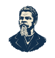
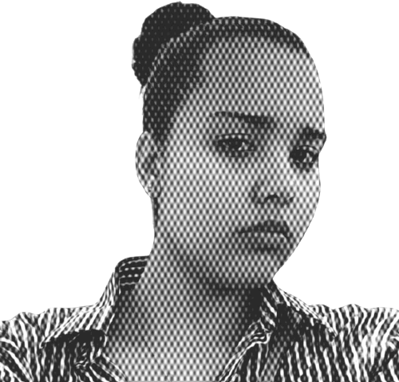
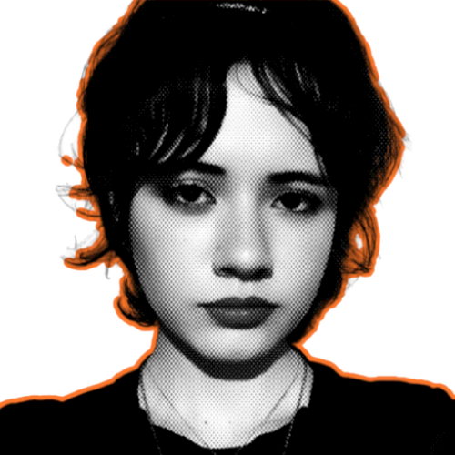
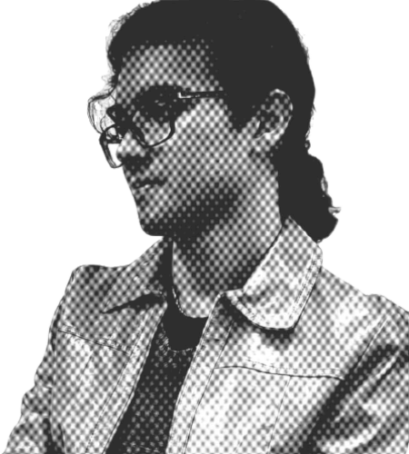
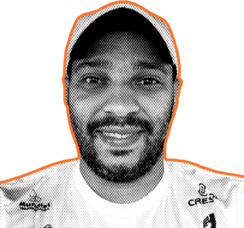
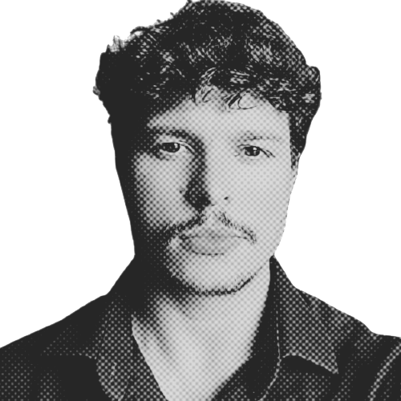
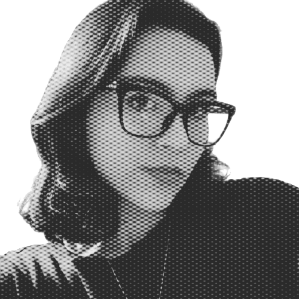
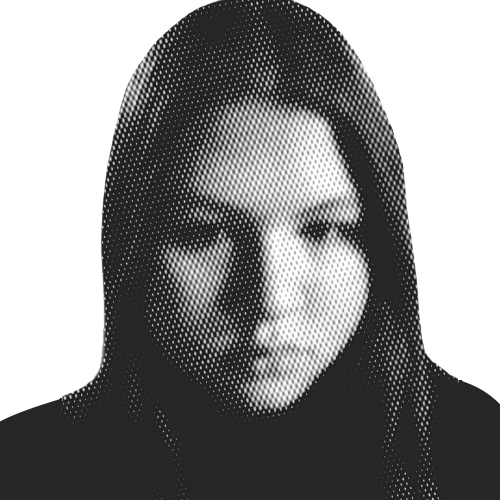

NOSSO COMPROMISSO COM VOCÊ
O CA existe
para os estudantes.
O Centro Acadêmico representa os estudantes diante da coordenação, do colegiado e da universidade. É também um espaço de convivência, formação e organização coletiva.
A Chapa Dragão do Mar nasce das conversas entre colegas de diferentes turmas e de problemas concretos do curso: informações que se perdem, oportunidades que não chegam a todos, dúvidas sobre a vida universitária e uma história do próprio curso que precisa ser registrada.
Não queremos um CA que apareça apenas em época de eleição. Queremos uma gestão séria, organizada e acessível, que trabalhe o ano inteiro e possa ser cobrada por cada estudante.
POR QUE DRAGÃO DO MAR?
Chico da Matilde:
resistência que faz história.

Francisco José do Nascimento, conhecido como Chico da Matilde, foi um jangadeiro cearense que se tornou símbolo da luta abolicionista. Em 1881, os jangadeiros do porto de Fortaleza se recusaram a transportar pessoas escravizadas até os navios que as levariam para outras províncias. A mobilização contribuiu para que o Ceará abolisse a escravidão em 1884, quatro anos antes da Lei Áurea.
Escolher Chico da Matilde é aproximar a diversidade e quebrar paradigmas. Somos um curso de História no Oeste do Paraná homenageando um jangadeiro do Ceará: o Sul precisa do Nordeste, e o Nordeste precisa do Sul. As distâncias do mapa não podem se transformar em distâncias entre nós.
Essa referência também orienta o que queremos para o CA: ação coletiva, coragem para enfrentar injustiças e a certeza de que pessoas comuns, organizadas, fazem história.
NOSSAS PROPOSTAS E COMPROMISSOS
Seis frentes de
trabalho coletivo.
01Comunicação que chega até você
Informação organizada, acessível e distribuída por diferentes canais, para que ninguém fique de fora.
- Comunidade oficial do curso no WhatsApp, com grupos organizados por finalidade.
- Grupos permanentes por disciplina, evitando a multiplicação de conversas a cada oferta.
- Fórum do curso para dúvidas, sugestões, oportunidades e discussões que possam ser consultadas depois.
- Site do CA com calendário, notícias, eventos, contatos, Guia do Estudante e materiais do curso.
- Visitas periódicas às salas e informativos impressos.
02Acolhimento e voz ativa
Um curso mais acolhedor começa com informação clara e participação real nas decisões.
- Guia do Estudante com orientações sobre sistemas, biblioteca, bolsas, serviços, currículo, estágios e oportunidades.
- Guia em diferentes formatos: site, PDF, publicações e versão impressa.
- Recepção de calouros desde a primeira semana.
- Consultas aos estudantes para conhecer demandas e ouvir a turma antes de decisões coletivas.
03Formação, eventos e oportunidades
A graduação também se constrói em encontros, experiências práticas e contato com diferentes espaços de atuação.
- Calendário anual de atividades, com Semana Acadêmica, palestras, mesas-redondas e integração.
- Conversas com professores da educação básica sobre ensino de História e profissão.
- Oficinas de curadoria, arquivos, preservação documental, história oral e acervos.
- Parcerias com museus, bibliotecas, arquivos e instituições de Cascavel e região.
- Divulgação de laboratórios, grupos de pesquisa e projetos de extensão da universidade.
04A memória do nosso curso
Registrar a trajetória do curso e da região para que as experiências não se percam a cada troca de gestão.
- Dar continuidade às cápsulas do tempo e garantir sua preservação.
- Propor um mural fotográfico permanente com as turmas identificadas pelo ano de ingresso.
- Organizar um acervo fotográfico digital de viagens, visitas, eventos e atividades.
- Publicar revista ou jornal semestral com pesquisas, entrevistas e acontecimentos do curso.
- Somar esforços em iniciativas de preservação da memória de Cascavel e do Oeste do Paraná.
05Transparência em cada real
Os recursos do CA pertencem aos estudantes. As contas precisam ser acessíveis e compreensíveis.
- Portal da Transparência no site, com receitas, despesas e andamento dos projetos.
- Prestação de contas semestral, divulgada nos canais do CA.
- Ações de arrecadação, como rifas, bingos e produtos personalizados do curso.
- Buscar a regularização jurídica do CA e a abertura de conta bancária em seu nome.
06Uma gestão séria e organizada
Responsabilidades claras, decisões registradas e continuidade entre as gestões.
- Definir as atribuições de cada diretoria e facilitar o contato com os responsáveis.
- Registrar decisões em ata e divulgar os encaminhamentos importantes.
- Elaborar ou aprimorar o regimento interno, com processos e responsabilidades claros.
- Organizar arquivos, contas, projetos e materiais para a próxima gestão.
O QUE VOCÊ PODE COBRAR DE NÓS
Compromissos que
precisam sair do papel.
QUEM FAZ A CHAPA?
Pessoas diferentes,
uma missão em comum.

PresidenteMariana Eduarda Izolani Lima

Tem 20 anos, é bolsista PIBE pelo projeto de extensão Narrativas Audiovisuais e realiza estágio na UNIOESTE. Tem interesse em cinema, misticismo e bruxaria, temas presentes em suas pesquisas e no desenvolvimento do TCC. Defende um CA aberto, participativo e transparente, que aproxime estudantes, colegiado e universidade.

Vice-presidenteLeticia Camargo Moi

Perfil em preparação.

Secretário-geral · Conselho Fiscal · Representante ColegiadoRenan Rodrigues Justino

Estudante do 2º ano de História, participou do PIBID e integra o projeto Narrativas Audiovisuais. Interessa-se por cinema de horror, História Cultural, arte e mídias como documento histórico e criação de narrativas. Defende a pluralidade de pensamento e a expansão de horizontes na experiência universitária.
Finanças · Eventos · Conselho FiscalLuciane de Fátima Alves Grein
Tem 41 anos, está no 2º ano de História e participou do PIBID. Tem especial interesse em educação, preservação da memória e valorização de um ensino superior acessível e plural. Defende uma gestão aberta, transparente e orientada às demandas dos estudantes.

Relações institucionais · Representante ColegiadoAlexsandro Fernandes Ferreira

Perfil em preparação.

ComunicaçãoTharles Cristian Franco

Tem 31 anos, cursa o 1º ano de História e está concluindo formação em Produção de Mídias Digitais. Participa do projeto Narrativas Audiovisuais e já trabalhou como fotógrafo, designer e social media. Quer contribuir para uma comunicação clara, canais de diálogo e maior aproximação entre estudantes e espaços de decisão.
Eventos · Conselho FiscalThiago Oliveira Silva
Perfil em preparação.

Integrante da chapaFabiula Cristina Gomes

É formada em Pedagogia pela UNIOESTE e atualmente cursa o 1º ano de História. Trabalha na Reitoria e já atuou como professora de Inglês. Interessa-se pela História das Mulheres e pelo audiovisual, além de defender a troca entre universidade e comunidade e a circulação do conhecimento para além dos muros universitários.
Representante Colegiado · Representante CECA · ColaboradoraCamila Frey Prestes
Me chamo Camila, tenho 30 anos e sou estudante do 3º ano. Participei do Programa Institucional de Bolsa de Iniciação à Docência (PIBID) e atualmente integro o projeto de extensão Narrativas Audiovisuais. Também tenho experiência profissional com design gráfico e edição de vídeo.
Tenho especial interesse em História Pública, produção audiovisual, educação e criação de mídias interativas. Gosto de explorar diferentes formas de compartilhar o conhecimento histórico, conectar pessoas e aproximar a História do cotidiano. Acredito que essas ferramentas podem contribuir para dar visibilidade às produções e iniciativas estudantis e fortalecer a comunicação dentro do nosso curso.
Acredito que a universidade se constrói coletivamente, por meio da participação, da criatividade e da troca de ideias. Quero contribuir para que o Centro Acadêmico seja um espaço mais aberto, acessível e próximo dos estudantes. É com esse propósito que faço parte da chapa!

ColaboradoraMariane

Perfil em preparação.
PARTICIPAÇÃO ESTUDANTIL
Fale com a gente
Envie dúvidas, sugestões ou contribuições para nossa chapa. Sua opinião é muito importante para a gente.
Veja quem já está com a gente nessa


Adicione as imagens à pasta assets/slide/ com os nomes apoio-01.png, apoio-02.png e apoio-03.png. Os arquivos devem estar no GitHub com esses nomes exatos.
CHAPA DRAGÃO DO MAR
Agora que você conhece um pouco mais da gente e das nossas propostas, queremos construir essa gestão com a participação de todo mundo.